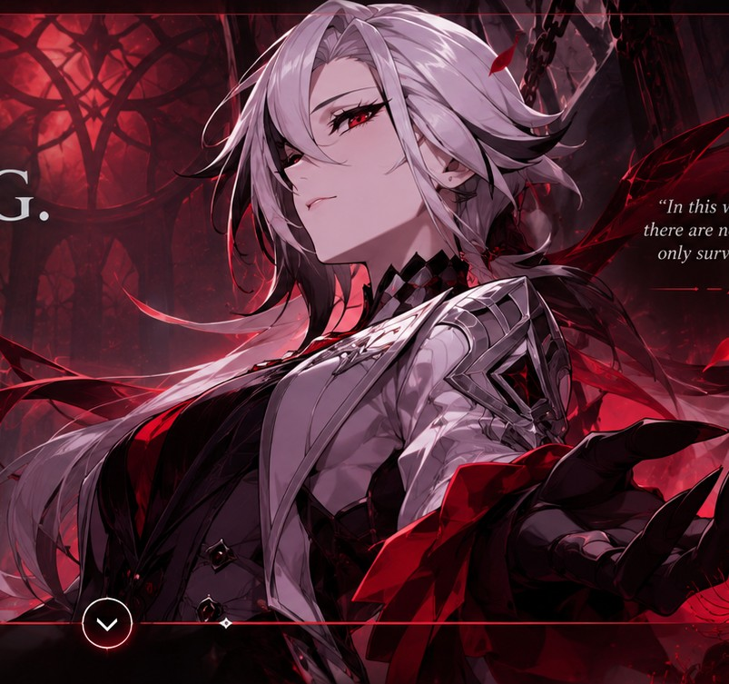

BEHIND THE SCREEN
About Me
A little introduction to the person behind the projects.

✦ THE KNAVE ✦Hello, I'm Lhance.
I'm Lhance Gerryco G. Remigio, a Bachelor of Science in Computer Science student from section BSCS 3-5. I'm interested in technology and enjoy learning how digital ideas are designed and developed.
Outside of academics, my hobbies include playing games, watching anime, reading manhwas, and listening to music. These interests keep me entertained and inspire my creativity.
As I continue studying, I want to improve my programming skills, gain more experience, and create projects that are useful and meaningful.
See My Work ↗Technical Skills
Technologies I have started learning and practicing.
HTML
Building the structure and content of web pages.
CSS
Styling layouts, colors, and responsive interfaces.
JavaScript
Adding interaction and dynamic behavior to websites.
MySQL
Working with relational databases and SQL queries.
Always learning. Always creating.
My goal is to become a capable developer, keep improving through practice, and build digital experiences that combine function and creativity.